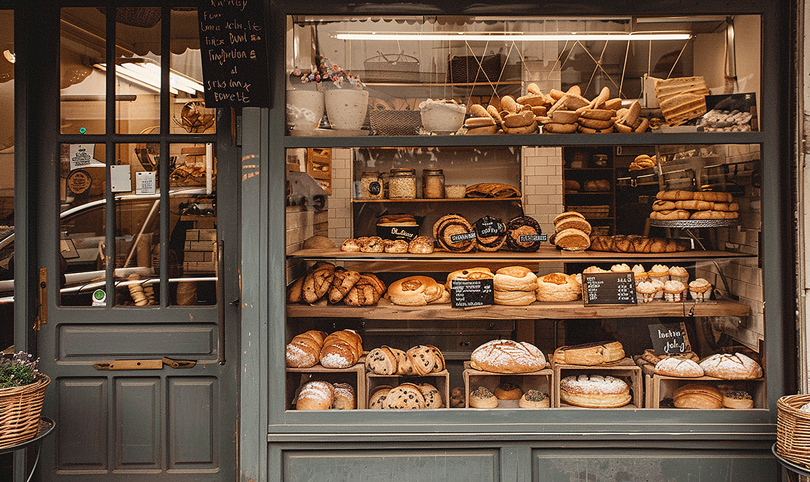

Our story
North Star Bakery began with a simple idea: give the neighborhood a place to buy a good loaf of bread and feel welcome. We want a quick stop at the counter to feel like part of your routine.

Some visitors come in on their way to work. Others stop by for weekend treats or a cake for someone they love. We enjoy helping each customer find something that fits every occasion.